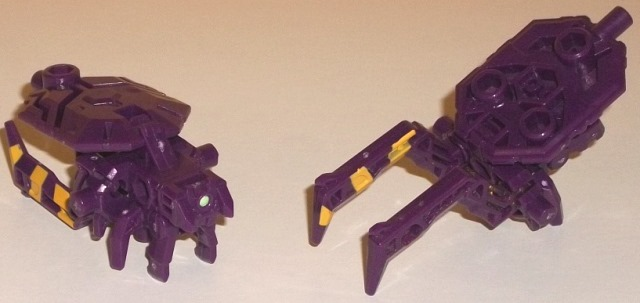
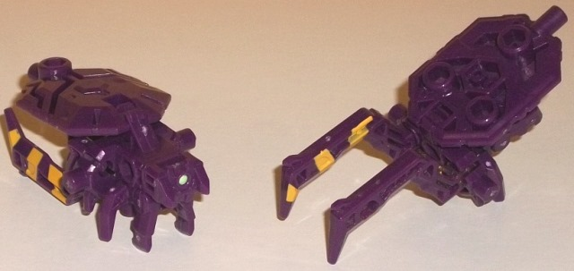

Allegiances : Predacon
Size : Mini-Con
Difficulty of Transformation : Very Easy
Color Scheme : Dark purple and some yellow and pale seafoam green
Individual Rating: 6.0
 Arachnoids
Arachnoids

Allegiances
: Predacon
Size
: Mini-Con
Difficulty of Transformation
: Very
Easy
Color Scheme
: Dark purple and some
yellow and pale seafoam green
Individual Rating:
6.0
Tarantulas comes with
two of these guys, identical in every way-- for reasons that will be explained
shortly. Like some of the other Club exclusives, these Arachnoids are redecoes
from a Arms Micron toy, previously available only in Japan-- in this case,
a toy named Ida. In beast mode, this toy resembles a mechanical arachnid,
though honestly if you want to get technical it's more insect than arachnid--
it's only got six legs. Two underneath the head and thorax are short and
stubby, but I guess to "compensate" for those the last two legs are SUPER
long the point where it's pretty ridiculous to see them as anything other
than claw-halves that will be used in its weapon mode. I do love the yellow
stripes on these long legs, though-- they not only help tie the Arachnoids
in thematically with Tarantulas, but they look nicely against the dark
purple that is the main plastic color for these little guys. There's also
some soft pale green used for the sole optic sensor in the front, which
is also a nice contrasting color. I wish some other paint was used on the
toy, but unfortunately it seems like the Arms Micron toys just don't get
much paint, period. The mold detailing is pretty decent on the abdomen
"flap" over the rear two legs, with some nice angular stripes and lines
here and there, and the head is fairly well-detailed too, but otherwise
the Arachnoids have fairly minimal mold detailing-- just enough to give
them a little visual interest, and little more. Given how many ways these
Arms Microns can be connected, the Arachnoids have several ports and pegs--
5mm ports on the sides of the main body as well as on the top and bottom
near the rear of the abdomen "flap", with two additional ones on the underside
of the flap in this mode, one on the inside of each of the rear legs/claws,
and one where the "butt" for this mode is. As far as 5mm pegs, there's
one on each side near the back end of the main body, and one on the bottom
of this area of the toy as well; thus, like pretty much all Arms Microns,
you can combine these guys with other compatible weapons in myriad ways.
As for articulation, this toy can move back-and-forth slightly at the front
two legs (as one). Otherwise, you aren't posing these guys much beyond
their "default" position.
The transformation for
these guys is pretty simple-- just flip the abdomen flap over, the front
little legs up, and then one of the large rear legs up. The "official"
transformation for this mold for Arms Micron was the flip BOTH of the back
legs up for a claw-weapon, but it makes much more sense to only flip one
up-- why? Because then if you have Tarantulas hold one Arachnoid in each
hand, it closely replicates his claw-hands from his Season 1 design! This
is another reason why I love the yellow paint apps (though I wish they
were on both sides of the claws, not just one), as they fit right in with
Tarantulas. Considering that these mold's weren't at ALL made with Tarantulas
in mind, this is one of FunPub's most ingenious uses of a mold in their
entire history, and it works almost perfectly. The only quibble I have
here is that, due to the mold's construction, if you leave one claw up
and the other down they're not on the same "plane", so they couldn't theoretically
clack together-- one's more left or right than the other. Still, this is
a small price to pay for such an ingenious alternate usage for these guys.
 Tarantulas
Tarantulas
Allegiance
: Predacon
Size
: Deluxe
Difficulty of Transformation
: Hard
Color Scheme
: Dark purple, black,
pale seafoam green, and some yellow, transparent orange, silver, and dark
metallic green
Individual Rating
: 9.0
(NOTE: Because this is a repaint, this is not a full-blown review. This mainly covers any changes made to the mold and the color scheme, and merely compares it to Autobot Alliance Wreck-Gar. For a review on the mold itself, read the review of Autobot Alliance Wreck-Gar here .)
I'll say it right off
the bat; picking this mode for "pre-Beast Wars" Tarantulas was just absolute
genius. He's a motorcycle-- which hearkens to his
Transmetal
"vehicle" form
-- he has a similar chainsaw weapon as that same form,
and with the Arachnoids you can replice his mandible-claw hands from his
initial
Beast Wars form
as well. As far as colors go, FunPub has reproduced
Tarantulas' initial colors pretty darned well, given the motorcycle proportions.
His main color is (of course) a nice dark purple, and there's a fair amount
of black in there as well-- usually on fitting areas like the wheels, tailpipe,
and handlebars, but on a few other areas like the lower abdomen and waist,
in a manner similar to how black was used on the original toy. There's
also a fair amount of yellow used to replicate Tarantulas' original paint
apps, including stripes on his lower arms and on the front of the motorcycle,
as well as the details on his spider abdomen replicated on the main body
of the motorcycle mode. Departing a bit more from his former toys, Tarantulas
also has two really neat shades of green; a more generous helping of pale
seafoam green, which works VERY well contrasting against the dark purple--
to me this is a positive change, as the lighter green not only contrasts
better than the green on the original, but also isn't so different that
it prevents the toy from looking like Tarantulas. (That said, I DON'T think
the light green goes well with the yellow border around the seat-- that
to me isn't a good color combo.) There's also some nice dark metallic green
used on the lower robot waist and the interior of the wheels. This latter
shade of green looks nice by itself, but against the black I don't think
it contrasts well enough-- it should have been just a TOUCH lighter to
make it more obvious against the black. As some final accent colors, there's
a bit of silver on the headlight and some transparent orange on the windshield
and the lightpiping for the head, which complements the yellow well. Tarantulas
uses Scrapheap's head, and quite ingeniously uses little "mandible"-like
details on the side of the faceplate, with the center painted black to
replicate Tarantulas' mouth. It looks quite a lot like Tarantulas' head
minus the "organic-ness" of the BW design.
No mold changes have
been made to Tarantulas.
The TFSS 3.0 Tarantulas
w/ Arachnoids set is ingenious. Tarantulas takes a mold that fits him in
multiple respects and adds in a nearly-perfect color scheme with a lot
of great paint shades, and the Arachnoids work both as minions and as a
way to give him his claw-hands. Plus, Tarantulas is just a pretty good
mold itself. This is my favorite of the TFSS 3.0 toys, and is MUCH more
fitting for a "vehicular Tarantulas" than his
BotCon
2016 exclusive
version.
Reviews by Beastbot